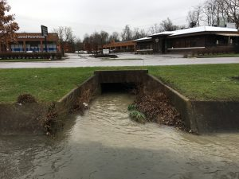
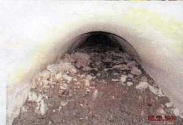

Silt, sediment, mud and rock have been washing off the Norfolk Southern Railroad Line into the storm sewer systems into the Derby Drive inlet in the Dearfield Neighborhood.
This information documents efforts by Friends of Wolf Run, LFUCG and the Kentucky Division of Water to gain the cooperation of Norfolk Southern in addressing the issue


Clogged Pipeline Derby Drive
What is the issue?
Clogged storm sewers with silt and sediment entering the creek
What is the cause?
Hydraulic Pumping silt from saturated railroad bed
Where is this taking place
Between Pasadena Drive and Southland Drive parallel to Regency Road in Lexington, Kentucky
Hydraulic pumping can be observed from public rights of way from the Pasadena Drive Overpass during storm events
Direct Discharge into the storm water system can be seen at the stormwater inlet on Derby Drive (But requires property owner permission)
Silt entering Wolf Run can be seen from the access road in front of Wilson’s Music on Southland Drive
Why should we be concerned?
Silt sediment and rock washing off the railroad right of way has clogged the storm drains in the area, contributing to flooding. LFUCG recently had to purchase houses in the area due to extensive flood damage and flood insurance payouts.
Cleanup is expensive requiring tax dollars to be spent digging out the material by hand, and has required modifications to the storm system to help frequent clean up efforts.
Silt and sediment impairs aquatic life affecting fish, amphibian and beneficial aquatic insect populations in the watershed. Lack of fish and predatory insects like dragon flies can increase mosquito and other undesirable insect populations
How could this issue be addressed?
Installation of a hydrodynamic separator that removes silt and sediment from stormwater. Settling ponds and grass bio-swales can also be used, but those require more real-estate.